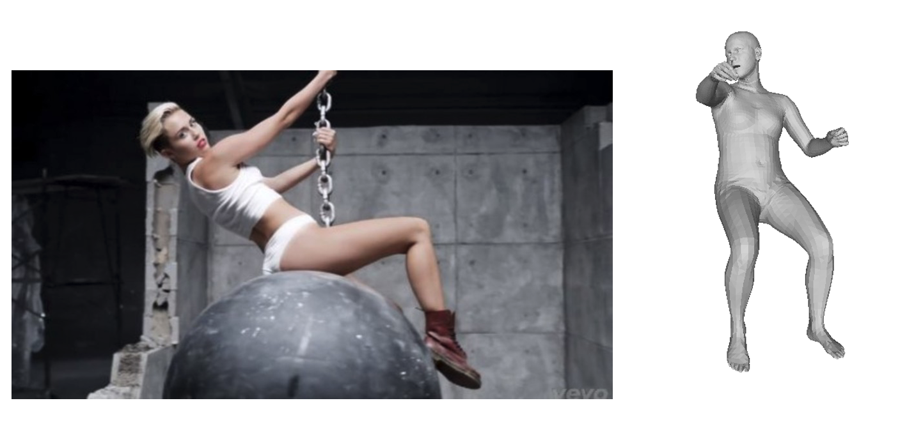

现有的三维/四维人体交互数据集（如 BEHAVE、InterCap）主要在室内环境采集，存在采集成本高、标注难度大的问题。近年来，研究人员尝试通过人体重建与物体重建算法结合，实现开放语义下人物–物体交互场景的自动重建与标注，但这类方法普遍面临人体与物体匹配不准确的核心挑战：
本课题旨在探索在人体重建过程中引入物体几何条件，通过同步考虑人体与物体的交互信息，提升人物–物体交互场景的整体重建精度，为后续交互理解与生成任务奠定基础。
重建偏差示例：双手握持链条（chain）场景中手部空间位置偏差
关键词： 三维人体重建, 人体-物体交互, 几何约束, 姿态优化, BEHAVE数据集
核心任务：在现有人体重建算法（如 GVHMR）基础上，加入物体 mesh 条件分支，利用物体几何信息约束人体重建结果
在人体重建模型的编码器或隐空间中新增物体 mesh 分支，通过以下步骤优化重建：
对人体重建结果施加额外的交互几何约束，优化人体与物体的空间关系：
通过数据集预处理或后处理模块，提升人体与物体的匹配精度：
| 数据集名称 | 核心内容 | 访问链接 |
|---|---|---|
| BEHAVE Dataset | 包含多种人体-物体交互场景（如坐、靠、握）的三维扫描数据，提供人体与物体的 mesh 标注 | https://virtualhumans.mpi-inf.mpg.de/behave/ |
| InterCap Dataset | 聚焦动态人体-物体交互的捕捉数据，支持时序交互场景的重建研究 | intercap.is.tue.mpg.de |